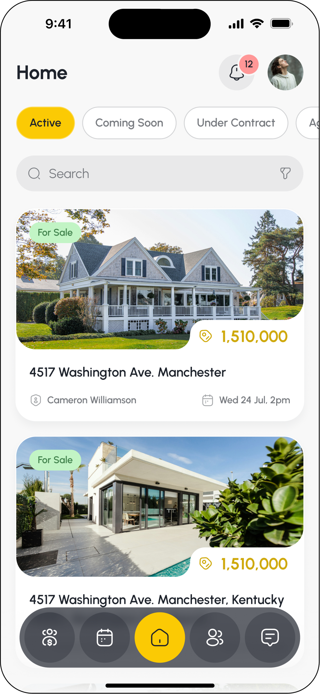
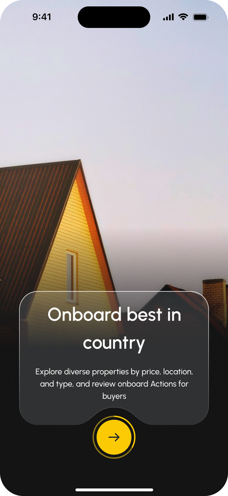
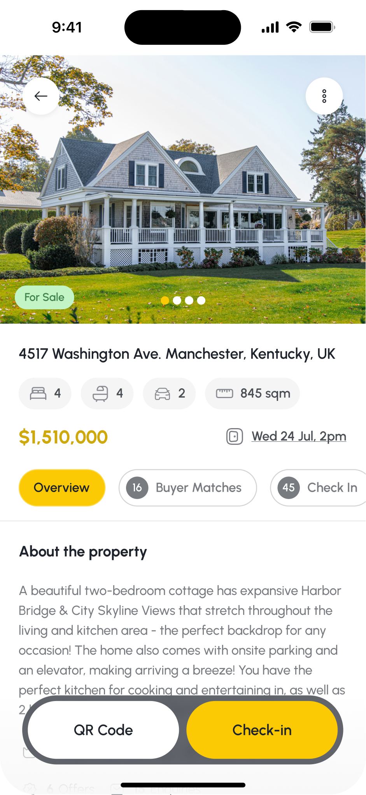
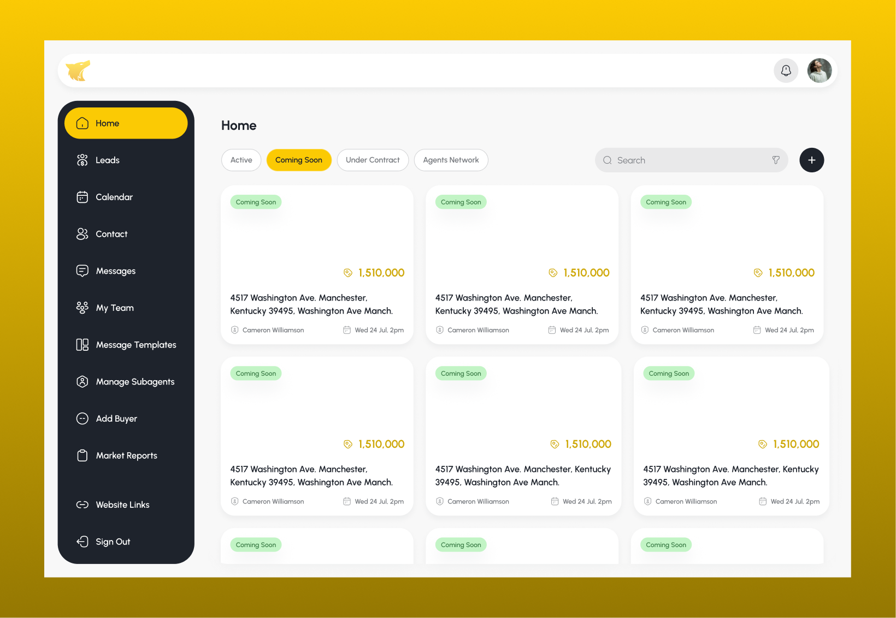
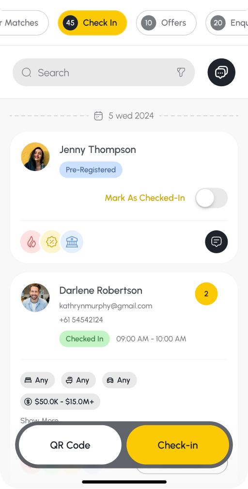
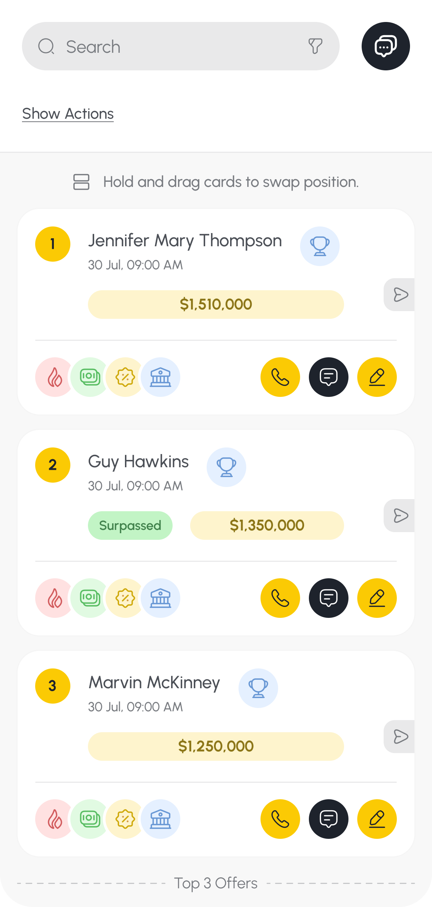
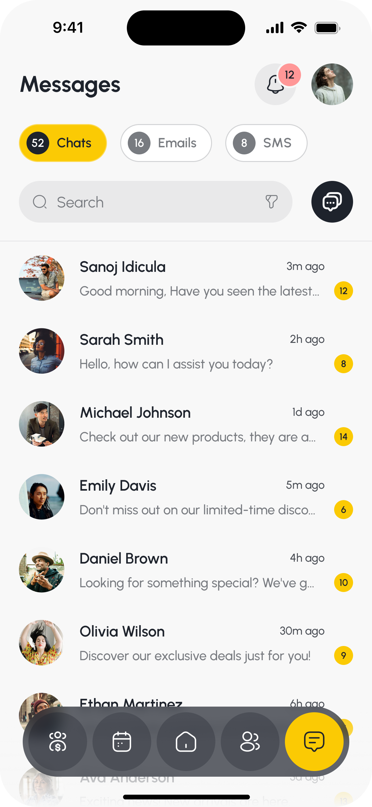

THE LEADS DEN
Connecting CRM records, inspections, buyer needs and offers across a real-estate sales journey.
The challenge — keep the relationship intact
A buyer inspects a property. The agent needs to remember what they want, understand whether they are ready to buy and follow up with something useful. The seller needs a clear picture of interest and offers. Meanwhile, the property and contact records already live in the agent’s CRM.
Each individual task is familiar. The design challenge is connecting them without making people reconstruct the context at every step.
The Leads Den brings property records, buyer profiles, inspection activity, communication and offers into a connected workspace. I was the main designer, responsible for the project’s UI and UX across its agent and client surfaces.
How might we help an agent move from a property interaction to an informed next action, while giving buyers and sellers a clearer part in the process?
The business intent is to make existing relationships more useful: follow up on enquiries, understand buyer readiness, progress offers and recognise relevant appraisal or service opportunities. The user benefit must come first: less repeated explanation and a more understandable next step.



Research — communication is part of the product
The research combines published Australian consumer studies, a comparison of documented CRM workflows and a detailed review of the design artefacts. Three findings provide the foundation for evaluating the experience.
Communication problems are reported by buyers and sellers. In the Real Property Report 2025, 26% of 782 recent or prospective buyers and sellers reported poor communication or unresponsiveness from agents. This points to a concrete service problem the interface can help address through accessible context and follow-up tools. It cannot, by itself, guarantee that an agent responds. Real Insurance / MYMAVINS, pp. 3, 24
A buyer’s readiness matters alongside their preferences. In the same report, 42% of the seller subgroup described dealing with time-wasting buyers as a challenge. For this design, the implication is to make timing and dependencies easier to discuss—not to exclude people who are early in their search. Real Insurance / MYMAVINS, p. 30
Existing CRMs already cover much of the workflow. Rex documents enquiry capture, matching and follow-up; Agentbox documents inspection feedback and vendor reporting. The opportunity is the quality of the connected experience across roles, rather than claiming these features are new to the market. Rex CRM · Agentbox vendor management
The resulting design priorities are continuity, relevant information and understandable actions. These are a synthesis of the evidence and design review, rather than direct quotations from research participants.
Three roles, different questions
The same property needs to answer different questions depending on who is using it.
| Role | The question the experience must answer | Design response |
|---|---|---|
| Agent | Who is interested, what do they need and what should I do next? | Property activity, buyer profiles, check-ins, offers and quick communication. |
| Buyer | Does this property fit my needs, and how do I take the next step? | Preferences, matched and interested listings, inspection registration and offer management. |
| Vendor / seller | What is happening with my property, and which offer needs my attention? | Association with the listing, agent communication and offer forwarding. |
Vendor and seller refer to the same ownership role here. Team members and service partners support the journey through assigned properties, permissions and referrals.
A shared workspace does not mean identical access. Buyer financial information, private agent notes and vendor-facing updates have different audiences. The design includes public/private controls and subagent permissions; the implementation needs to preserve those distinctions throughout the journey.

Decision one — organise the work around the property
The problem: an enquiry, an inspection and an offer are different records, but they belong to the same selling campaign. Separating them without enough context makes the agent responsible for remembering the relationship.
The design response: I designed the property view as an operational hub. Overview, buyer matches, check-ins, offers and enquiries sit within the same property context. Counts indicate activity, while contact actions sit close to the relevant person.
This structure lets the agent move from “Which property am I working on?” to “Who needs attention?” without starting a separate search for every activity. A contact’s history also connects their check-ins, matches, offers and vendor listings.
The CRM connection is central to this model. Onboarding includes CRM selection and configuration, while property interfaces show CRM-related update labels. This positions the experience around existing agency information rather than asking the agent to build another database from scratch.
The trade-off: the hub can become crowded as activity grows. Tabs divide the work into recognisable categories, but a count alone does not communicate urgency. A future refinement should distinguish a new enquiry from an old, resolved one and make the next required action explicit.
Decision two — connect the inspection to a useful buyer profile

The problem: recording a visitor’s name does not explain what to do after the open home. An agent also needs to understand suitability, intent and practical dependencies.
The design response: the buyer journey collects property goals, preferred suburbs and features, budget, purchase timing, financing and whether another property needs to sell first. Matched, Interested and Checked-In views distinguish suggested relevance from an explicit action by the buyer.
QR access, preregistration and check-in connect the physical inspection to that digital relationship. The agent can return to the person in the context of the property and use their profile to prepare a more relevant conversation.
This is a useful distinction: an inspection is an event; a buyer profile is a relationship that continues across properties. The design supports both.
The trade-off: more information can improve follow-up, but a long questionnaire creates effort at the moment someone wants to inspect a home. The separate check-in and preference flows provide different entry points. Their next validation should establish which questions are essential immediately and which can wait.
A second risk is record identity. Rex’s support documentation explicitly describes accidental duplicate contacts and the effort involved in merging them. Connecting attendance to contacts therefore needs a clear match, review and recovery strategy; the presence of a QR flow alone does not solve duplication. Rex record deduplication
Decision three — make an offer more than a price

The problem: a price alone is not enough for an agent and seller to understand an offer. Purchasers, financing, deposit, settlement preferences and conditions can change the conversation.
The design response: I designed a staged offer flow that gathers purchaser information, ownership details, commercial terms, finance, an existing-property dependency and conditions. It accommodates additional purchasers and supporting documents.
On the buyer side, offers can be viewed, edited and withdrawn. On the agent side, offers sit against the property and can be forwarded to the vendor. Confirmation screens make consequential actions more deliberate.
The value of the structure is comparability and completeness: the agent has a consistent place to find each part of the offer rather than piecing it together from separate messages. The design represents offer collection and management; it does not establish contract execution.
The trade-off: a detailed form can feel intimidating. Breaking it into stages gives the content a sequence, but the number of stages is not proof of usability. The next test should examine whether people understand each field, recover from errors and know what happens after submitting or withdrawing.
The agent interface uses the label “winning offer.” I would revisit this language to make the exact stage clearer—for example, whether the agent has selected an offer for vendor consideration or the vendor has accepted it. The words should reflect the actual permission and decision, not imply a later transaction stage.
Decision four — keep follow-up close to its context

The problem: even a well-organised record is of little use if the next conversation is delayed, irrelevant or sent to the wrong people.
The design response: the communication tools support email, SMS and in-app messages, with individual or selected recipients, templates, dynamic fields and scheduled sending. Quick contact actions also appear in property activity lists.
This gives the agent a way to reuse common information while retaining control over the recipient and message. Templates reduce repeated composition; property and contact fields keep messages specific to the relationship.
The trade-off: sending more messages is not the same as communicating better. Bulk selection and dynamic fields increase the importance of previewing the audience and content. A useful next refinement would make unresolved fields, unsuitable recipients and duplicate follow-ups visible before sending.
A later market check reinforces this priority: REA’s 2025 buyer survey reports that 62% of its 2,051 buyers tend to stop investigating a property when the agent is unresponsive. This is contextual evidence for continued investment in follow-up—not a result achieved by The Leads Den. REA buyer report, p. 20
The wider system — ownership, referrals and ongoing relationships
The project extends beyond the inspection-to-offer journey. These supporting experiences make it a substantial working product.
Delegation with responsibility. Subagents can receive assigned properties and access to specific areas. Team management includes moving or copying members and reassigning people when a team is removed. These controls recognise that organisational changes affect active work.
Relationships beyond a single purchase. A buyer who needs to sell may also need an appraisal. A buyer seeking finance may request broker contact. An investor may need property management. The lead categories connect these needs to relevant services. The important boundary is intention: a recorded need should lead to an appropriate request, rather than an assumed permission to share personal information.
Reports that lead back to a conversation. The web designs include suburb reports, templates, branding, subscribers and publishing states. Public reports combine local information with listings and an appraisal request. This creates another route into the relationship, alongside a property enquiry or inspection.
Administration that supports consistency. Template categories, reusable fields and branding tools give the wider communication system a shared foundation. Calendar and notification settings support everyday coordination.
Across devices — continuity without identical layouts
The mobile experience keeps property access, check-in and contact actions close to the agent in the field. Web provides space for denser property records, offers, communication and report configuration. Buyer flows also extend across mobile and web.
The important consistency is conceptual: the same property, person and action should remain recognisable when the device changes. Mirroring every layout would be less useful than preserving that understanding.
The interface uses a light working surface, dark text, rounded containers and yellow emphasis. The visual hierarchy needs to help distinguish a selected view from a primary action, especially when several property tabs and contact controls share a small screen.
For the next accessibility review, I would test text enlargement, keyboard operation on web, non-colour status cues and the reachability of the fixed mobile actions. Responsive frames are a design deliverable; usability across devices still needs task-based verification.


Outcome — a connected product design
The design output brings an existing-CRM connection, property management, buyer qualification, inspections, offers and communication into a shared product model. Supporting team, referral and reporting flows extend the relationship beyond one transaction.
My contribution was carrying responsibility across this full design scope: making the core records understandable, connecting agent and client actions, and translating a broad set of requirements into mobile and web experiences.
The strongest evidence here is the designed workflow. Its intended benefits are less context reconstruction, more relevant follow-up and clearer offer handling. These are the outcomes to measure when evaluating the product in use.
| Question to validate | Task and measurement |
|---|---|
| Can an agent act on an inspection without rebuilding the context? | Locate an attendee, explain their needs and prepare a follow-up; measure completion, time and wrong-record errors. |
| Can a buyer progress without help? | Complete an offer scenario; measure missing information, field errors, assistance and understanding of the next step. |
| Is shared information interpreted correctly? | Ask agent and vendor participants to explain an offer’s status and who acts next; record misunderstandings. |
| Does CRM connection preserve trust? | Evaluate stale data, duplicate contacts and failed updates; measure detection and recovery, not just successful imports. |
Reflection — the hand-off is the design problem
The central lesson in this work is that feature completeness and journey clarity are different things. A platform can contain every required screen while still leaving someone unsure what happened or what to do next.
The most valuable next iteration would make ownership and state more explicit at the hand-offs: CRM to app, inspection to contact, contact to message, buyer to agent and agent to vendor. That is where the product can become easier to trust as well as easier to use.